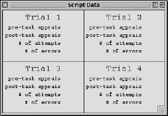

Using the Serial-Sub Interface
Isaac Councill (igc2@psu.edu) and Frank Ritter (fer2@psu.edu)
revised 11/02
Quick Reference:
Contol Panel
Script Options
Traces
Model Behavior
Appraisals
Script Data
The control panel is the only place that you actually interact with the model. You will find several options for selecting the model's conditions, run control, and some advanced output options. Following is a list of the individual components and a description of what they do.
Pre-Task Appraisals
On the left, you will see a radio-button panel with options for Threat, Neutral, and Challenge. When one of these options is selected, the model will reload with new parameters that influence the model's behavior in the desired way. If you wish to run the model through only one task, the selection that you make will remain the model's pre-task appraisal throughout that task, but if you wish to script the model through four-trial blocks (more on that later), your selection will be the model's initial pre-task appraisal (for the first trial) and for the additional trials in the block the model will take on either a threatened or challenged pre-task appraisal based on its previous performance and caffeine level.
Worry
Below the task appraisal option panel, there is a check box labeled "Worried". Select this box if you wish to make the model worried. This effect is cumulative with task appraisal effects.
Caffeine Level
Across the bottom of the control panel, you will find a slider labeled "Caffeine Level". To include the effects of caffeine, simply adjust the the level (in milligrams) to the desired amount. This can be done by dragging the carrot across the slider, using the arrow buttons at each end, or typing the desired amout into the text box on the left of the slider. Caffeine effects will only show up if the model is scripted in four-trial blocks.
Run Control
There are buttons on the control panel for running, reloading, scripting,
and stepping the model. Pressing "RUN" will run the model continuously
for one trial (four minutes by default, in ACT-R time). Pressing
"RELOAD" will reset the model with the preferences selected elsewhere in
the control panel. "SCRIPT 1" will script the model over one four-trial
block, outputting the data obtained from each trial into the script data
window (see below). "STEP" will run the model for one production
cycle. This is typically used to closely inspect the model's cognition,
for debugging purposes or to gain deeper understanding of the model's behavior.
There is also a text box to the immediate right
of the RUN button. This contains the text "240" by default, and it
is recommended that this be left as is. It is possible to change
the text and thereby change the duration for each trial, but this feature
has not been debugged so try it at your own risk.
Menu Functions
Across the top of the control panel is a menubar, containing the items "Model", "Edit", and "Help". The Help function merely pops up a window that directs your attention to this document, but the other two menus contain functions that will be useful to learn about.
Model Menu
This menu contains the items "script", "run", "reload", and "quit". The run and reload options perform the same functions that the run and reload buttons on the main part of the control panel (as above). The quit option will quit your Lisp expession, destroying the model interface with it. The script option opens the script options dialog box, which gives you quite a bit more control of model scripting than the "Script 1" button on the main control panel. Following is a discussion of the script options dialog box.
Opened from the "Model" menu, this dialog presents options for scripting
the model over varying conditions as many times as you like, or have time
for. There are two main scripting options, one for running the model
many times with the same pre-task appraisal each time (Script Single Condition),
and one for scripting the model in four-trial blocks with the same initial
pre-task appraisal at the start of each block.
If you wish to use the single condition option,
simply select a task appraisal from the radio button panel under the Script
Single Condtion label. Then, if you so desire, you may change the
number in the box labelled "Iterations" to alter the number of trials the
script will perform. To start the script, press the "GO" button in
the Script One Condtion area. The script options dialog will disappear
and the model will begin its script (this might take a while). Values
for caffeine level and worry will be taken from the controls on the main
control panel.
If you want to script the model over four-trial
blocks, just apply the above procedure to the controls under the Script
Four-Trial Blocks label. The difference is that the task appraisal
that you select will only be applied to the first trial out of each four-trial
block. The pre-task appraisals for the following three trials will
be decided by the model based on its performace on the previous trial.
Also, the number of iterations now applies to the number of four-trial
blocks, not individual trials.
For a note on how to greatly speed up script execution,
see the Note at the end of the Getting Started document here.
OUTPUT
All output for the scripts is entered into text files in the model directory. Specifically, raw data is stored in a file called raw-data (with the date and time append) processed data is stored in a file called data (with the data and time appended). The form of the raw-data file is a long column of numbers in the form:
48
3
51
0
45
5
and so on...
As you might have guessed, these indicate pairs of data points for each
trial, namely, number of attempts and number of errors. So the data
above would indicate three trials: during the first trial, the model made
48 attempts and got 3 wrong; on the second, the model made 51 attempts
and had a flawless performance; and on the third, the model made 45 attempts
and got 5 wrong.
You do not really need to work with the raw data
unless you really want to personally inspect the details of the model's
performance, because the processed data file, "data", contains average
performace measures, as well as standard deviations, in a very readable
form. See Sample Output for a detailed
view of what the data file looks like.
NOTE: If you run scripts multiple times without
manually archiving or renaming your data files, you may lose your data.
The macros are slightly forgiving - if you run two scripts without archiving
your data from the first one, your data files from the first script will
be renamed raw-data.old and data.old, but if you run the script a third
time without taking precautions, the data files from the first script will
be deleted.
Edit Menu
The edit menu only contains one item - the traces function. This will bring up a new window that will allow you set ACT-R traces graphically. Following is a description of the trace control window.
The
code for the trace control window is taken from ACT-R Vision, a graphical
development environment for ACT-R written by Roman Belavkin at the University
of Nottingham. ACT-R Vision is a great tool (I use it when I do ACT-R
on my Sparcstation), and I was interested in incorporating it with the
model distribution, but most of its features did not work on the Mac under
MCL 4.3 when I tried them. This being the case, I simply lifted the
trace control window (which does work) and stuck it into my code (properly
credited, as you may notice). It should additionally be noted that
by the time you read this, ACT-R Vision might very well work with MCL,
but I do not know for sure.
For a detailed description of all of the traces,
see the ACT-R 4 manual at http://128.2.248.58/inter/Welcome.html
(you will have to log in - just follow the directions on the site).
For now, I recommend investigating the production and partial matching
traces if you are interested. Others may be interesting, if you wish
to experiment. These traces are best utilized in conjunction with
the step function - you can step the model one production cycle from the
step button on the control panel.
This window displays aspects of the model's behavior, both overt and "internal".
Overt Behavior
The display labeled "Current Number" contains the model's latest subtraction
answer. If the answer is correct a blue check mark appears to the
right of the number text, and the answer remains unchanged until the next
response is given. If the answer is incorrect, however, a red "X"
mark appears over the number text and the model is "fed" the correct answer
(as in the Tomaka et al. experiment), at which point the correct answer
appears in place of the incorrect answer and the model resumes subtraction.
The # of Attempts and # of Errors boxes keep track
of number of subtraction attempts the model makes during a single trial,
and how many of those attempts resulted in incorrect responses, respectively.
Task-Time in s indicates the total time spent on the task in ACT-R time
(measured in seconds).
"Internal" Behavior
I have chosen to designate the following components as displays of the
model's internal behavior because these components allow the observation
of cogntive activity that would not be observable in human subjects.
They are representations of mental activities that are not reported, nor
could they be reported, by humans undertaking the serial subtraction task.
Specifically, the components in this category are
the matrix labeled "Number in Memory", which I will call the chunk matrix,
and the blue circle labeled "Worry Indicator". The numbers in the
chunk matrix represent declarative memory chunks encoding knowledge of
numbers (e.g. Eight ISA number value eight). When these chunks are
retrieved during mathematical processing, they are outlined in the chunk
matrix with a red square. For example, if the model is processing
the rightmost column in the expression 5178 - 7, and is retrieving a known
subtraction fact (that eight minus seven equals one), eight will be highlighted
followed by one.
The worry indicator simply tracks the firing of
the worry production if worry is turned on in the model. When worry
fires, the worry indicator turns red.
This window is fairly self-explanatory. At the bottom is a box
labeled "Pre-Task Appraisal". The text in this box indicated the
pre-task appraisal made by the model at the beginning of the task (or,
most likely, that you selected from the control panel). Throughout
an individual trial, there are no changes to this window until the end
of the task, at which time a post-task appraisal is made. If you
are running the model for only one trial, the post-task appraisal will
appear at the end of the task and remain static. If you are scripting
the model, the post-task appraisal will only be displayed briefly at the
end of each trial, and at the start of the next trial, the post-task appraisal
for the previous trial becomes the current pre-task appraisal, leaving
the post-task appraisal box empty once again.
The
script data window is useful for viewing he results of one four-trial script.
This window is typically used in conjunction with the SCRIPT 1 button on
the control panel. As each trial in the four-trial block is completed,
all of the values (appraisals, number of attempts, and number of errors)
are filled in to the appropriate box.
Though output still goes to this window when longer
scripts are run, the resulting data files (see above)
are much more useful than trying to keep up with all the values as they
are displayed.